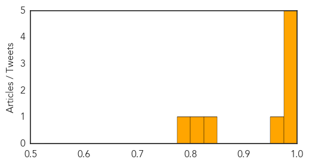

MERS
30-Day Web Trend
12 alerts, 0 warnings

30-Day Twitter Trend
4 alerts, 0 warnings

Article Locations

Article Confidences
Top Articles:
- 0.998
- Middle East Mystery Disease Triggers Early Resurgence
- 0.993
- Malaysian Government Warns Tourists To Skip Camel Farm Tours In Middle East For Fear of Respiratory Syndrome Coronavirus
- 0.992
- Saudi Arabia invites UN health team in precautionary measure against spread of respiratory virus
- 0.992
- Saudi Arabia invites UN health team in precautionary measure against spread of respiratory virus
- 0.987
- 5 co-passengers of nurse with MERS-CoV identified, traced in Zamboanga City
- 0.956
- Amid global infections, DOH advises families of OFWs to stop 'fiesta-like' airport welcome
- 0.835
- Coronavirus surge serious threat to Umrah pilgrims: experts
- 0.818
- Coronavirus surge serious threat to Umrah pilgrims: Experts
- 0.783
- Ministry: Avoid camel farm tours in Middle East - Nation
Top Tweets:
- 0.744
- AFD blog `Saudi MOH: 2 New MERS Cases, 2 Recoveries, 5 Deaths' MERS-CoV http://t.co/bUAWdyY9Eu
- 0.595
- RT: Saudi Arabia reported two new MERS-CoV cases in the last 24 hours (@SaudiMOH, February 19 2015, ... http://t.co/fvAfE5…
Hepatitis
30-Day Web Trend
8 alerts, 1 warnings
30-Day Twitter Trend
0 alerts, 0 warnings

Article Locations

Article Confidences

Top Articles:
- 0.899
- WA cases of berry Hepatitis A tipped to rise
- 0.844
- Government to Roll out Mass Hepatitis B Vaccination
- 0.829
- Inflectra™ (infliximab) patient registry reports interim results in the treatment of inflammatory bowel disease
- 0.809
- Inflectra(TM) (infliximab) patient registry reports interim results in the treatment of inflammatory bowel disease
- 0.663
- Australia sees 13 cases of Hepatitis from imported frozen berries
Top Tweets:
-
No tweets found for Feb 19, 2015